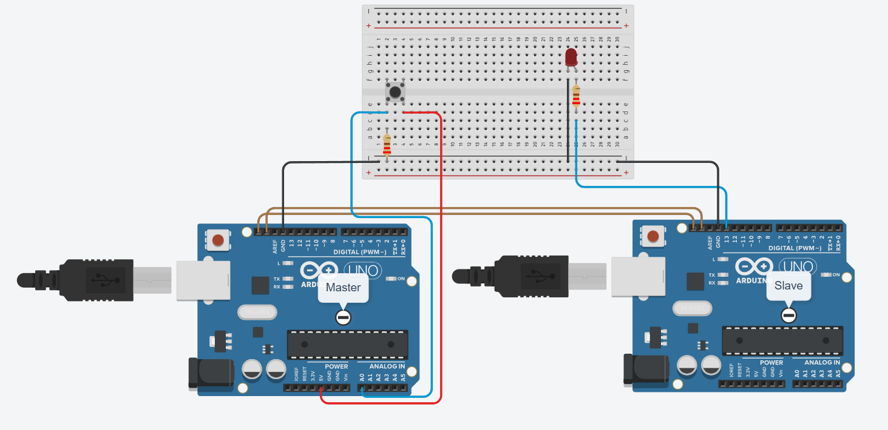

Цифрова метеостанція з дисплеєм LCD 1602 I2C та сенсором DHT11
Справжній мікрокліматичний монітор. Опануйте промисловий інтерфейс I2C (Inter-Integrated Circuit): замість підключення 16 заплутаних проводів використовуйте всього 2 сигнальні лінії (SDA та SCL) для виведення тексту на символьний екран.
🌡️ Навіщо потрібен модуль-перехідник PCF8574?
Класичний екран 1602 має 16 металевих пінів. Якщо підключати їх напряму до Arduino в паралельному режимі 4-bit, ви витратите майже всі вільні піни плати! Модуль розширювача шини PCF8574 на зворотному боці екрана приймає байти даних через шину I2C всього по двох проводах: SDA (Data, пін A4) та SCL (Clock, пін A5). На цю ж шину паралельно можна підключити ще десятки інших датчиків!
Схеми підключення: LCD 1602 з модулем PCF8574 та датчик DHT11

Лінія SDA підключається до A4, лінія SCL — до A5. Живлення екрана 5V та заземлення GND беруться зі спільних шин.
Керуйте віртуальним кліматом та дивіться екран
Змінюйте температуру та вологість: дивіться як оновлюється матриця символів і формується індекс комфорту
Чекліст компонентів метеостанції
LCD 1602 + I2C Backpack
1 шт. • Чіп PCF8574Символьний дисплей 16 стовпчиків на 2 рядки з інтегрованим перехідником.
Датчик DHT11 (або DHT22)
1 шт. • Цифровий інтерфейсВимірює температуру (0..50°C ±2°C) та вологість (20..90% ±5%).
Резистор 10 кОм
1 шт. • Підтяжка DataПідтягує лінію зв\'язку DHT11 до +5V для стабільної передачі пакетів.
Arduino UNO R3
1 шт. • Апаратна шина TWIВбудований апаратний I2C контролер на пінах A4 (SDA) та A5 (SCL).
Дроти папа-мама
8 шт. • КомутаціяДля підключення виводів I2C backpack безпосередньо до гребінки UNO.
Як шина I2C адресує до 127 пристроїв по двох проводах?
Шина I2C (Inter-Integrated Circuit) була винайдена компанією Philips. Вона працює за топологією Master-Slave:
- SCL (Serial Clock): Тактовий сигнал, який генерує мікроконтролер Arduino для синхронізації бітів.
- SDA (Serial Data): Двонаправлена лінія передачі даних.
Кожен пристрій на шині має унікальну 7-бітну апаратну адресу (для перехідника PCF8574T це зазвичай 0x27, а для PCF8574AT — 0x3F). Arduino посилає адресний байт, і лише той чип, чия адреса збіглася, відправляє у відповідь сигнал підтвердження ACK (Acknowledge)!
Скетч метеостанції з бібліотекою LiquidCrystal_I2C та DHT
// SimpleArduino — Проєкт #06: Метеостанція з дисплеєм LCD 1602 I2C та датчиком DHT11
// Вимагає бібліотек: "LiquidCrystal_I2C" та "DHT sensor library" від Adafruit
#include <Wire.h>
#include <LiquidCrystal_I2C.h>
#include <DHT.h>
#define DHTPIN 2 // Цифровий пін підключення датчика DHT11
#define DHTTYPE DHT11
// Ініціалізація екрана з адресою 0x27, 16 символів, 2 рядки
// Якщо екран не світить текст — змініть адресу на 0x3F
LiquidCrystal_I2C lcd(0x27, 16, 2);
DHT dht(DHTPIN, DHTTYPE);
unsigned long lastReadTime = 0;
const unsigned long READ_INTERVAL = 2000; // Опитування датчика раз на 2 секунди
void setup() {
Serial.begin(9600);
dht.begin();
// Ініціалізація шини I2C та увімкнення підсвічування дисплея
lcd.init();
lcd.backlight();
// Вітальне повідомлення
lcd.setCursor(0, 0);
lcd.print("SimpleArduino");
lcd.setCursor(0, 1);
lcd.print("Meteo Station...");
delay(1500);
lcd.clear();
}
void loop() {
unsigned long now = millis();
// Датчик DHT11 має інерційність і не може опитуватися частіше 1 разу на секунду
if (now - lastReadTime >= READ_INTERVAL) {
lastReadTime = now;
float humidity = dht.readHumidity();
float temperature = dht.readTemperature();
// Перевірка на помилку зчитування
if (isnan(humidity) || isnan(temperature)) {
lcd.setCursor(0, 0);
lcd.print("Sensor Err! ");
lcd.setCursor(0, 1);
lcd.print("Check Wiring ");
return;
}
// Рядок 1: Температура
lcd.setCursor(0, 0);
lcd.print("Temp: ");
lcd.print(temperature, 1);
lcd.print((char)223); // Символ градуса °
lcd.print("C ");
// Рядок 2: Вологість та індекс
lcd.setCursor(0, 1);
lcd.print("Hum: ");
lcd.print(humidity, 0);
lcd.print("% ");
if (humidity >= 40 && humidity <= 60) {
lcd.print("[OK] ");
} else if (humidity < 40) {
lcd.print("[DRY] ");
} else {
lcd.print("[WET] ");
}
Serial.print("T: "); Serial.print(temperature);
Serial.print("C | H: "); Serial.print(humidity); Serial.println("%");
}
}Матриця типових несправностей
Дисплей світиться синім, але літер немає (порожні прямокутники)
Найчастіша помилка! Потрібно відрегулювати контрастність. На зворотній стороні плати PCF8574 є маленький синій підлаштувальний потенціометр. Покрутіть його хрестовою викруткою, поки літери не стануть чіткими!
Програма компілюється, але екран взагалі не реагує
Невірна I2C адреса! Більшість китайських плат мають адресу 0x27, але чипи з маркуванням PCF8574AT використовують адресу 0x3F. Запустіть скетч «I2C Scanner» для визначення точної адреси.
На екрані постійно пише «Sensor Err!»
Датчик DHT11 не відповідає. Перевірте, чи встановлено підтягувальний резистор 10 кОм між виводом Data та лінією живлення 5V, або переконайтеся, що ви не плутаєте розпіновку сенсора.
Показники оновлюються занадто повільно
Сенсор DHT11 є терморезистивним і фізично вимагає 1–2 секунди для стабілізації кристала вологості. Не робіть опитування частіше 2 секунд, інакше датчик почне повертати помилки nan.
Перевірте себе: чому на шині I2C обов'язково потрібні підтягувальні резистори?
Оберіть єдину схемотехнічно правильну причину будови ліній SDA та SCL: